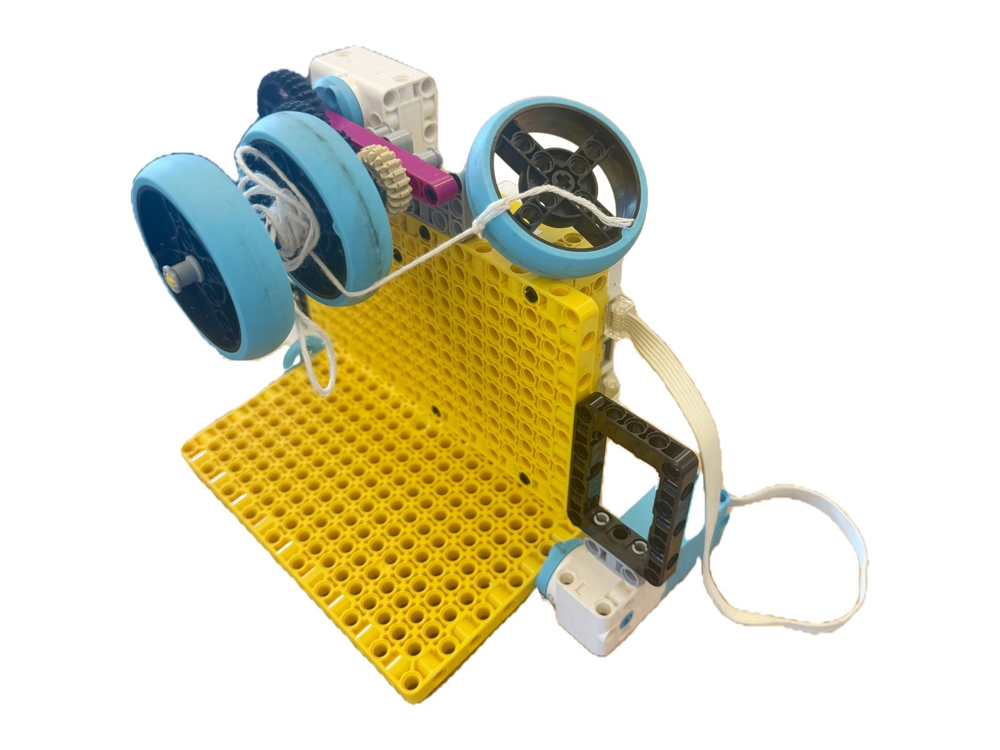
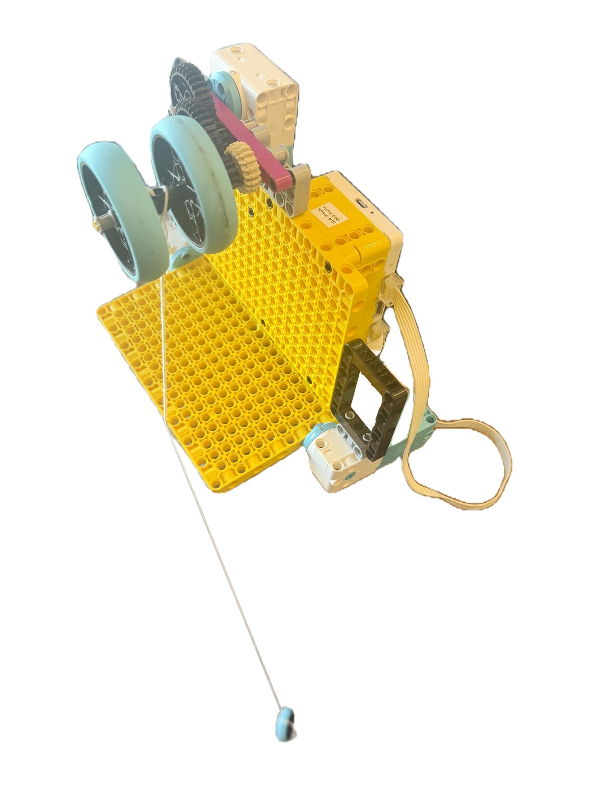
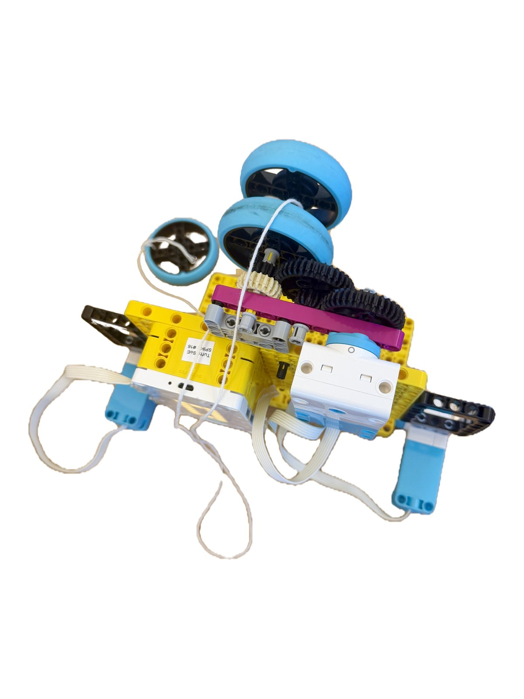

This in-class activity was prep for the haunted house. I chose Task Option 3: Pulley and Drops (winding up and letting go), which uses a SPIKE motor and string to drop an object, like a spider or a bat, and then pull it back up.
The task described two problems. First, winding string with a SPIKE motor can be tricky, because the string can slip off the guardrail and get wrapped around the motor or axle. Second, a pulley at the top keeps the robot down low so it can pull things up and down, but it makes fast drops hard: the string can only be let out as fast as the motor turns. The alternative is to put the robot up high. A door or flap holds the object while the motor unwinds the string. When the flap opens, the object drops instantly, and the motor then winds it back up slowly.
I built the up-high version. The robot’s frame is two large yellow plates joined in an L shape. Motor E, at the top, turns a set of gears connected to an axle between two light-blue wheels, and the string winds around that axle. Motors A and F, one on each side, each swing a black frame that works as a flap to hold and release the object. I tied a light-blue wheel to the end of the string as the object to drop, and I set the robot up high on the edge of a tall cabinet so the string could hang down toward the floor.
My program waits for the right button on the hub to be pressed. It pairs motors A and F and turns the flaps 720° at 1000 degrees per second, with A turning clockwise and F anticlockwise. Motor E then runs anticlockwise for 5 seconds at a slower 250 degrees per second. Next, A and F turn the flaps 720° back the other way, motor E runs clockwise for 5 seconds, and the motors are unpaired. The program pauses 2 seconds between steps and waits for the button to be released before it accepts another press.


# Setup: motors A and F are paired; motor E is a separate motor.
from hub import button, port
import runloop
import motor
import motor_pair
# Set the speed for motors A and F.
PAIR_SPEED = 1000
# Keep motor E at its previous speed.
MOTOR_E_SPEED = 250
# Double the paired movement distance from 360 to 720 degrees.
DROP_DEGREES = 720
async def main():
# Keep waiting for right-button presses.
while True:
# Wait until the right hub button is pressed.
while button.pressed(button.RIGHT) == 0:
await runloop.sleep_ms(20)
# Pair motors A and F for this run.
motor_pair.pair(motor_pair.PAIR_1, port.A, port.F)
await runloop.sleep_ms(2000)
# Move A clockwise and F anticlockwise.
await motor_pair.move_tank_for_degrees(
motor_pair.PAIR_1,
DROP_DEGREES,
PAIR_SPEED,
-PAIR_SPEED
)
await runloop.sleep_ms(2000)
# Run motor E anticlockwise for five seconds.
await motor.run_for_time(port.E, 5000, -MOTOR_E_SPEED)
await runloop.sleep_ms(2000)
# Move A and F back the same distance in opposite directions.
await motor_pair.move_tank_for_degrees(
motor_pair.PAIR_1,
DROP_DEGREES,
-PAIR_SPEED,
PAIR_SPEED
)
await runloop.sleep_ms(2000)
# Run motor E clockwise for five seconds.
await motor.run_for_time(port.E, 5000, MOTOR_E_SPEED)
await runloop.sleep_ms(2000)
# Unpair the motors after the sequence finishes.
motor_pair.unpair(motor_pair.PAIR_1)
await runloop.sleep_ms(2000)
# Wait for the right button to be released before accepting another press.
while button.pressed(button.RIGHT) > 0:
await runloop.sleep_ms(20)
runloop.run(main())